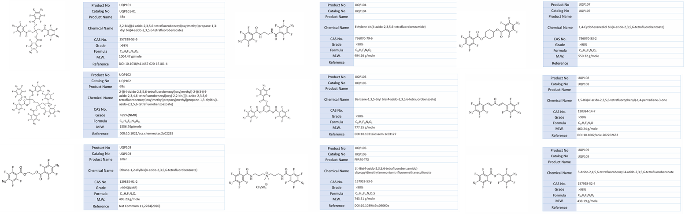

제품소개
UQP line (Crosslinking Agent)
아자이드기를 갖는 가교제는 UV 조사 또는 가열 시 고분자 및 전자재료의 알킬기와 선택적 가교반응을 통해 견고한 필름을 형성합니다. 가교제의 구조를 입체적으로 제어하고 아자이드기 수를 늘림으로써 가교 효율을 극대화할 수 있으며, 이를 통해 전자재료의 광학적, 전기적 특성을 유지하면서 소량 첨가만으로도 고해상도 마이크로 패터닝이 가능합니다.
